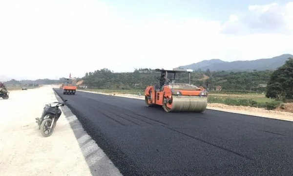
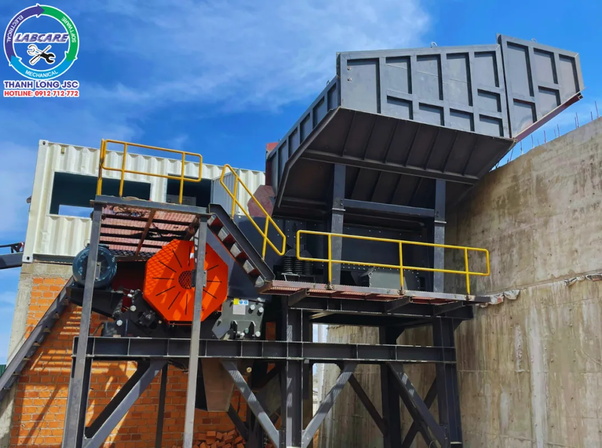
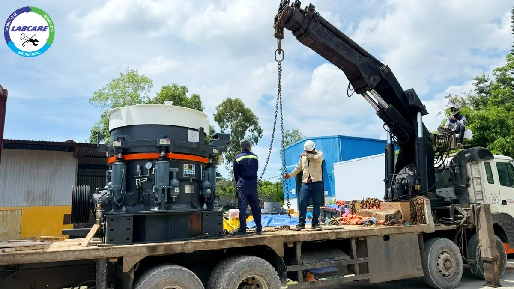
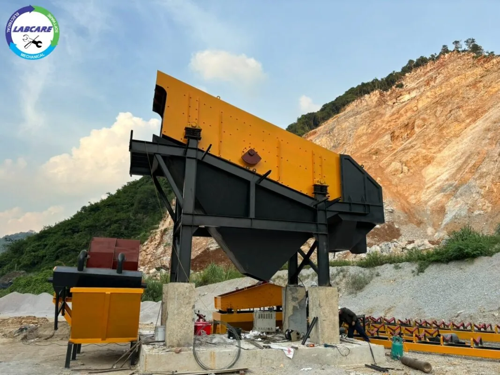
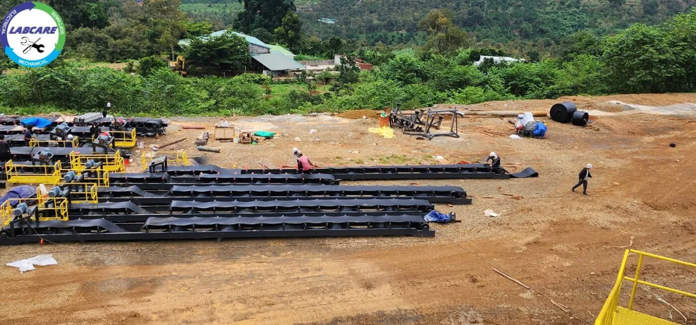

Bà Rịa – Vũng Tàu là địa phương có tiềm năng lớn về nguồn nguyên liệu đá tự nhiên. Phục vụ nhu cầu xây dựng hạ tầng, công nghiệp và dân dụng. Do đó, các dây chuyền nghiền đá xây dựng tại đây được đầu tư mạnh mẽ. Nhằm đáp ứng khối lượng sản xuất lớn với chất lượng cao, đồng thời đảm bảo hiệu quả về kinh tế và bảo vệ môi trường.

Vai trò của đá xây dựng trong phát triển hạ tầng
Đá xây dựng, đặc biệt là các loại đá nghiền như đá 1×2, đá 4×6, đá mi. Được sử dụng rộng rãi trong các công trình như đường giao thông, cầu, cảng, và các dự án xây dựng dân dụng. Bà Rịa – Vũng Tàu với vị trí chiến lược gần các khu công nghiệp. Cảng biển lớn và các tuyến đường quốc gia, đòi hỏi lượng lớn vật liệu xây dựng để đáp ứng nhu cầu phát triển.

Cấu tạo và hoạt động của dây chuyền nghiền đá xây dựng
Một dây chuyền nghiền đá điển hình tại Bà Rịa – Vũng Tàu bao gồm các thiết bị chính như sau:
Máy nghiền hàm:
Khi máy nghiền hàm hoạt động, trục lệch tâm quay làm cho hàm di động chuyển động lên xuống. Đá được nén giữa hàm di động và hàm cố định, bị nghiền vỡ và thoát ra ngoài qua khe hở phía dưới.

Máy nghiền côn:
Máy nghiền côn hoạt động dựa trên nguyên tắc ép nén. Khi trục chính quay, nón nghiền di chuyển xoay quanh trục lệch tâm, tạo ra lực ép và cắt. Đá được đưa vào khoang nghiền và bị ép giữa nón và thành của máy, sau đó vỡ ra thành các mảnh nhỏ.

Sàng rung phân loại:
Máy sàng rung hoạt động bằng cách tạo ra dao động qua hệ thống rung. Đá sau khi nghiền được đưa vào máy sàng, các hạt có kích thước nhỏ sẽ lọt qua lỗ sàng. Các hạt có kích thước lớn hơn sẽ tiếp tục ở lại và di chuyển qua lỗ khác hoặc quay lại quá trình nghiền.

Băng tải:
Động cơ quay làm cho băng tải di chuyển, vận chuyển đá từ một thiết bị này sang thiết bị khác trong dây chuyền sản xuất. Băng tải được sử dụng để vận chuyển nguyên liệu giữa các máy nghiền và máy sàng. Đảm bảo dòng chảy liên tục trong dây chuyền sản xuất.

Ngoài ra, các dây chuyền này còn có thể được trang bị thêm hệ thống rửa đá và các thiết bị xử lý bụi, giảm thiểu tác động đến môi trường xung quanh.
Lợi ích khi sử dụng dây chuyền nghiền đá hiện đại
Hiệu suất cao:
Dây chuyền nghiền đá hiện đại tại Bà Rịa – Vũng Tàu có thể xử lý khối lượng lớn nguyên liệu với thời gian ngắn, đáp ứng nhu cầu xây dựng ngày càng tăng của các dự án.
Chất lượng đồng đều:
Nhờ sự phân loại chính xác và quy trình nghiền nhiều giai đoạn, sản phẩm đá có kích thước đồng đều. Đạt tiêu chuẩn cao cho các công trình xây dựng.
Tiết kiệm chi phí:
Hệ thống tự động và công nghệ cao giúp giảm thiểu sự phụ thuộc vào nhân công, tiết kiệm chi phí vận hành. Đồng thời, các máy móc hiện đại thường tiết kiệm năng lượng hơn.
Bảo vệ môi trường:
Nhiều dây chuyền nghiền đá tại Bà Rịa – Vũng Tàu được trang bị hệ thống xử lý bụi và tiếng ồn. Giảm thiểu ảnh hưởng đến môi trường và cộng đồng xung quanh.
Tiềm năng phát triển của dây chuyền nghiền đá tại Bà Rịa – Vũng Tàu
Với sự phát triển nhanh chóng của cơ sở hạ tầng giao thông và đô thị tại khu vực phía Nam, nhu cầu sử dụng đá xây dựng sẽ tiếp tục tăng mạnh. Điều này đòi hỏi các doanh nghiệp đầu tư vào những dây chuyền nghiền đá hiện đại. Có công suất lớn và thân thiện với môi trường.
Bên cạnh đó, sự cải tiến không ngừng về công nghệ nghiền đá cũng giúp các doanh nghiệp tại Bà Rịa – Vũng Tàu. Nâng cao sức cạnh tranh, đáp ứng không chỉ nhu cầu trong nước mà còn hướng tới xuất khẩu nguyên vật liệu xây dựng ra nước ngoài.
Mua dây chuyền sản xuất đá xây dựng uy tín ở đâu?
Máy nghiền đá Thanh Long đơn vị chuyên cung cấp các thiết bị về máy nghiền đá, máy nghiền cát, đá xây dưng, máy ép bùn,….Và có kho vật tư có sẵn tại Việt Nam.
Ngoài ra, máy nghiền đá Thanh Long còn là đơn vị chuyên cung cấp dây chuyền nghiền rửa cát nhân tạo, cát silic tại Việt Nam.
Liên hệ với chúng tôi để được tư vấn hiệu quả.
Hotline: 0912 712 772